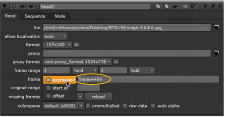

默认情况下, Nuke 假设当前处理的帧与读入的帧之间存在精确关系。例如，在 15 帧, Nuke 在 image.0015.rgb 中读取。但是，您可以使用 框架 读取节点上的参数。例如，如果您有一个从 image.0500.rgb 运行到 image.1000.rgb 的序列，您可能希望在帧 1 处读取 image.0500.rgb。 Nuke 允许您使用表达式、指定的开始帧和常数偏移来执行此操作。每种方法如下所述。
| 1。 | 选择 图像 > 阅读 导入图像序列。 |
| 2. | 在读取节点控件中，设置 框架 下拉菜单到 表达 。在右侧的字段中输入表达式。表达式将更改当前帧和读入的帧之间的关系。 |

例如，如果剪辑从 image.0500.rgb 开始，并且您希望将第一帧放在帧 1 而不是帧 500，则可以使用表达式 框架 499 。这样，499 帧被添加到当前帧中，以获取读取的帧的编号。在帧 1，读入 image0500.rgb; 在帧 2，读入 image0501.rgb; 依此类推。
表达式的另一个例子是 框架 * 2 。此表达式将当前帧乘以 2，以获取读取的帧的编号。这样，只使用剪辑中的每个其他帧。在帧 1，读入 image.0002.rgb; 在帧 2，读入 image.0004.rgb; 在帧 3，读入 image.0006.rgb; 依此类推。
| 1. | Select Image > Read to import an image sequence. |
| 2. | 在读取节点控件中，设置 框架 下拉菜单到 从开始 。在右侧的字段中输入起始帧编号。这指定读取序列中第一帧的帧。换句话说，所有帧都是偏移的，以便剪辑从指定的帧开始。 |
例如，如果您的序列从 image.0500.rgb 开始，并输入 1 在该字段中，image0500.rgb 在帧 1 处读入。同样，如果输入 100 在该字段中，image0500.rgb 在第 100 帧读入。
| 1. | Select Image > Read to import an image sequence. |
| 2. | 在读取节点控件中，设置 框架 下拉菜单到 偏移 。在右侧的字段中输入恒定偏移。将此常数值添加到当前帧中，以获取读取的帧的编号。 |
例如，如果剪辑从 image.0500.rgb 开始，并且您希望将第一帧放在帧 1 而不是帧 500，则可以使用 499 作为常数偏移。通过这种方式，499 被添加到当前帧中，以获取读取的帧。在帧 1，image.0500.rgb 读入; 在帧 2，image.0501 读入，依此类推。
也可以使用负值作为常数偏移。例如，如果使用值-10, Nuke 从当前帧中减去 10，以获得读入的帧。在 20 帧时，读入 image.0010.rgb; 在 21 帧时，读入 image.0011.rgb; 依此类推。
|
|